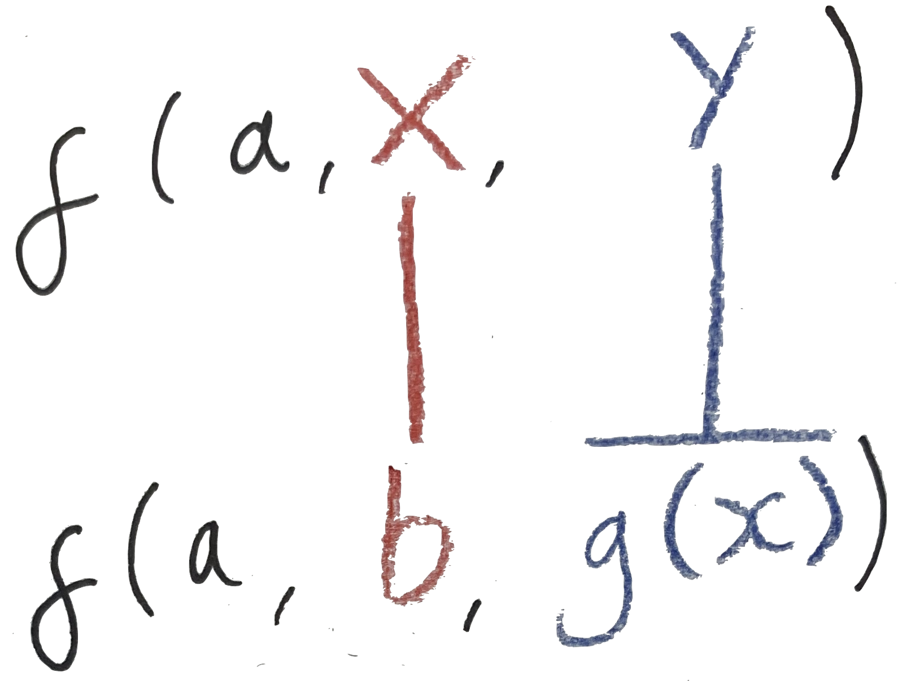
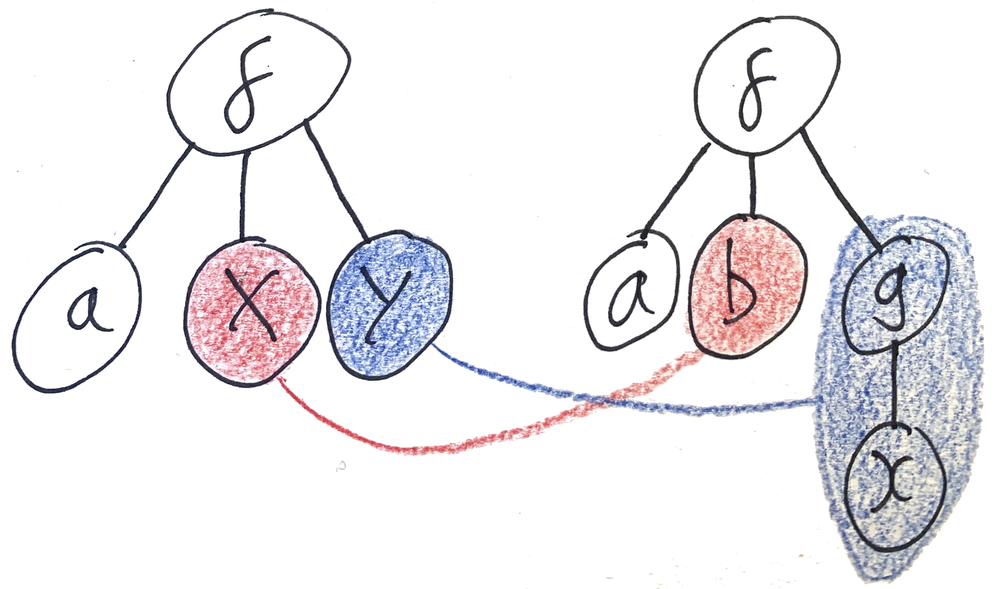
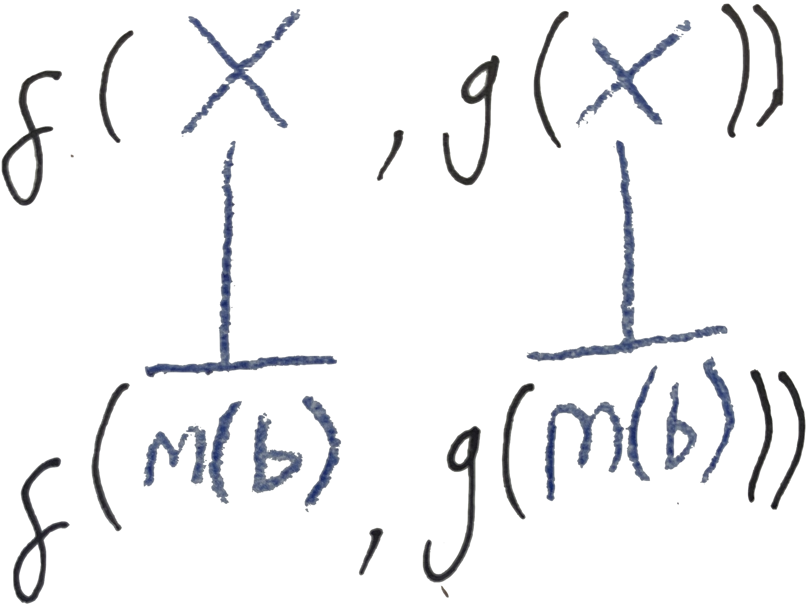
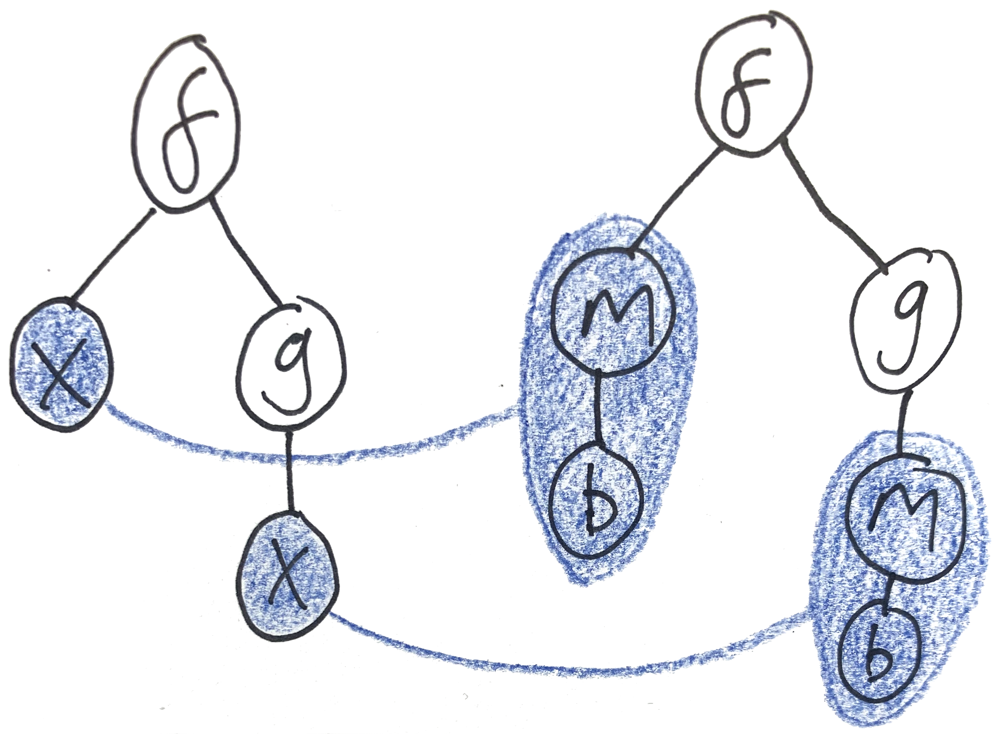
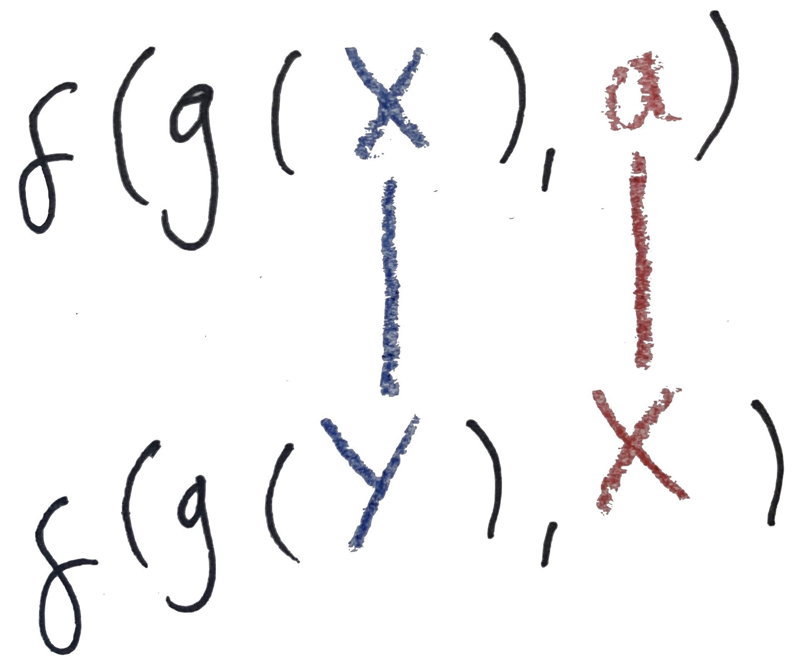
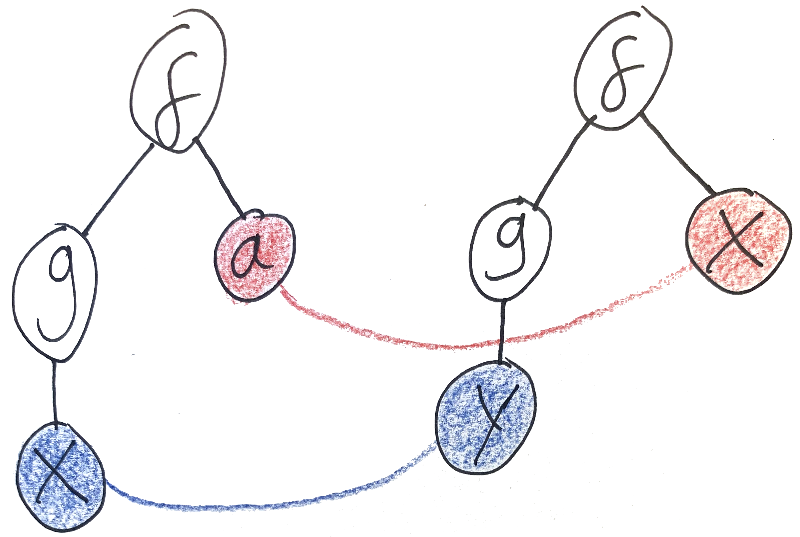

Generic Unification with Sawmill
This is part of a series of posts about implementing a miniature Prolog interpreter in C#.
We’re getting on to the fun part of writing an interpreter: actually interpreting the input code. In this post we’re going to implement a unification algorithm using my generic programming library Sawmill. Unification slots somewhere in the middle or bottom-right of this diagram:

Unification
Unification is a process for solving equations, much like the equations you’d solve in algebra at school. It’s all about plugging holes — given a pair of terms with variables inside them, what subterms can I plug in for the variables to make the terms equal? Unifying two terms produces a substitution — a mapping from variables to terms. If you plug the terms in for the variables (on both sides of the equation), then the equation should be satisfied.
The algorithm works by examining the syntactic structure of the two terms. It tries to match up each node in one term’s syntax tree with a corresponding node in the other. When you find yourself matching a term against a variable, you know that the variable must equal the term. Unification is a purely syntactic process — you can’t apply domain-specific rules such as “add a number to both sides” like you can in algebra.
Let’s work through some examples to get a feel for it.
- Unify
f(a, X, Y)withf(a, b, g(x)).- Starting at the outermost part of the two terms’ syntax, we see
fapplied to three arguments in each of them — a match. Now we can match up the arguments and try to unify each of them. - The first argument in each is the atom
a— so they match. - Unifying the second arguments gives us
X ~ b.Xis a variable, and we now know it must be equal tob, so that gets added to the output substitution. - Unifying the third arguments, we find
Y ~ g(x), so that also goes in the output. It’s OK to match a variable to a composite term. - The resulting substitution is
X := b; Y := g(x). You can try plugging this substitution back in to the two terms to verify that it does indeed make them equal.
- Starting at the outermost part of the two terms’ syntax, we see
- Unify
f(X, g(X))withf(m(b), g(m(b))). In this example, theXvariable appears twice in the left hand argument; these are the sameXand at the end of unification they have to agree.- The outermost
fs match, so we descend to the arguments. - The first argument gives us
X ~ m(b). - Looking at the second argument, you see
gapplied to one argument in both cases. This is a match, so we can once more continue to compare the arguments. - Comparing the arguments gives us
X ~ m(b). This is the same constraint as the one we got from the first argument. - The resulting substitution is
X := m(b).
- The outermost
- Unify
f(g(X), a)withf(g(Y), X). In this example we see variables appearing on both sides. We have to come up with a value for all of the variables in both terms; once again theXappearing on both sides is the sameX.- Once more, the outermost
fs match. - Matching up the first arguments, we get
g(X) ~ g(Y), soX ~ Y. It’s OK to match variables to each other. - Matching up the first arguments gives us
a ~ X. - The resulting substitution is
X := a; Y := X(or, equivalently,X := a; Y := a).
- Once more, the outermost
- A couple of exercises:
- Does
f(g(X), a)unify withf(g(b), X)? - Does
f(X, Y)unify withf(g(Y), Z)? - Does
f(X, Y)unify withf(Y, g(X))? - Try coming up with some interesting examples of terms which don’t unify.
- Does
Let’s sketch out an algorithm for unification.
- Look at the outermost node in the two terms’ ASTs.
- If either one of them is a variable, bind the variable to the term in the output substitution. If it’s already bound in the output substitution, make sure that this binding doesn’t conflict.
- If both are leaf nodes, check that they match.
- If both are composite terms, check that they match and that they have the same number of children. If so, repeat steps 1-3 for each pair of children.
- Otherwise, the terms don’t match and we should abort unification.
Hopefully you can see how I’ve applied these steps in the examples above. I’ve glossed over some important details here (particularly regarding what happens in step 2 when a variable is already in the substitution) but I’ll be sure to fill them in when we get to writing code. (In fact we’re going to design our code so that a variable will never already be in the substitution.)
IUnifiable
Unification is a central part of Prolog’s programming model, but it has applications outside of Prolog as well (type inference, for example). Any time you have a syntactic structure with placeholder variables, the question “what can I plug in for these variables?” makes sense.
Let’s quantify that. Reading back over the description of the algorithm, it seems to build on a few core concepts:
- Terms
- Terms which are variables
- Composite terms with children
- Leaf nodes with no children
- Matching a pair of terms
Abstracting over these concepts should allow us to implement unification once and for all, without depending on the specifics of Prolog’s terms. Don’t solve one problem. Solve them all!
Sawmill’s core IRewritable interface is a generic way of looking at tree-shaped terms with children. The only concepts we need to add on top of IRewritable are variables and matching.
interface IUnifiable<T> : IRewritable<T> where T : IUnifiable<T>
{
bool Match(T other);
string AsVariable();
}Match tells you whether the current node matches another node. In Prolog’s case, it tests whether the two nodes have the same name and number of children. AsVariable checks whether the current node is a variable, returning its name as a string (or null if it’s not). Here’s what it looks like implemented on the Term syntax tree:
abstract class Term : IUnifiable<Term>
{
// ...
public abstract bool Match(Term other);
public abstract string AsVariable();
}
class Predicate : Term
{
// ...
public override bool Match(Term other)
=> other is Predicate p
&& p.Name == Name
&& p.Args.Length == Args.Length;
public override string AsVariable() => null;
}
class Variable : Term
{
// ...
public override bool Match(Term other)
=> other is Variable v
&& v.Name == Name;
public override string AsVariable() => Name;
}
class Atom : Term
{
// ...
public override bool Match(Term other)
=> other is Atom a
&& a.Value == Value;
public override string AsVariable() => null;
}For example, here’s a LINQ query which finds all of the variables mentioned anywhere in a term. It uses SelfAndDescendants together with AsVariable to find the nodes which were in fact variables.
public static ImmutableHashSet<string> Variables<T>(this T value) where T : IUnifiable<T>
=> value
.SelfAndDescendants()
.Select(x => x.AsVariable())
.Where(name => name != null)
.Distinct()
.ToImmutableHashSet();Substitutions
I mentioned that the output of unification is a substitution — a mapping from variable names to terms. We’ll model that using an ordinary dictionary of strings and Ts. Our signature for Unify is going to look like this:
The main thing you can do with a substitution is apply it to a term. That means replacing all the variables in the term with the sub-terms they’re mapped to by the substitution. This should eliminate any variables in the term which are bound by the substitution.
public static T Apply<T>(this ImmutableDictionary<string, T> subst, T value) where T : IUnifiable<T>
=> value.Rewrite(
x =>
{
var name = x.AsVariable();
if (name != null)
{
return subst.GetValueOrDefault(name, x);
}
return x;
}
);We’re going to maintain the invariant that the terms in a substitution are never going to contain any variables which are bound by the substitution. (It’s possible, and indeed desirable for efficiency, to relax this invariant, but today we’re going to focus on simplicity.)
Binding Single Variables & the Occurs Check
Time to fill in the body of Unify. Let’s start with step 2 of the algorithm: what to do when either of the input terms is a variable.
public static ImmutableDictionary<string, T> Unify<T>(this T left, T right) where T : IUnifiable<T>
{
var leftName = left.AsVariable();
if (leftName != null) // then the left term was a variable
{
return Bind(leftName, right);
}
var rightName = right.AsVariable();
if (rightName != null) // then the right term was a variable
{
return Bind(rightName, left);
}
// ...
}Bind(name, value) returns a substitution with the variable name bound to the term value. However! There are some important edge cases to watch out for which could result in breaking the invariant I mentioned above.
- The term
valuecould be the same variable asname. This would produce a substitution likeX := X(that is, a do-nothing substitution), so we’ll just return an empty substitution in that case. - The term
valuecould mention the variablenamesomewhere inside it. This would produce a substitution likeX := foo(X). If you try and find a concrete value forXyou’d end up with an infinitely long chain offoos! Some systems allow infinite terms like this, but others disallow it by checking whether a variable occurs in the term it’s being bound to. This check is suitably called the occurs check.
private static ImmutableDictionary<string, T> Bind<T>(string name, T value) where T : IUnifiable<T>
{
var valueName = value.AsVariable();
if (valueName != null && name == valueName)
{
return ImmutableDictionary<string, T>.Empty;
}
if (value.Variables().Contains(name))
{
throw new UnificationError("occurs check");
}
return ImmutableDictionary<string, T>.Empty.Add(name, value);
}Handling Non-Variables
Let’s continue implementing Unify. At this point we know that neither left nor right are variables, so they must be either composite terms or leaf nodes. In either case, we need to check whether they match.
public static ImmutableDictionary<string, T> Unify<T>(this T left, T right) where T : IUnifiable<T>
{
// ...
if (!left.Match(right))
{
throw new UnificationError("values didn't match");
}
// ...
}If they did match, it’s time to try matching up their children. (If the two nodes were leaf nodes, their list of children is empty, so the following code does nothing.)
public static ImmutableDictionary<string, T> Unify<T>(this T left, T right) where T : IUnifiable<T>
{
// ...
var leftChildren = left.GetChildren();
var rightChildren = right.GetChildren();
return Solve(leftChildren, rightChildren);
}Unifying Children — Systems of Equations
Unifying the children means solving a system of equations. If more than one equation mentions the same variable, they have to agree on what that variable should be.
The plain is to pair up the children in the two lists and try to unify each with their partner, building up a substitution as we go.
public static ImmutableDictionary<string, T> Solve<T>(T[] left, T[] right) where T : IUnifiable<T>
{
if (left.Length != right.Length)
{
throw new UnificationError("values didn't match");
}
var subst = ImmutableDictionary<string, T>.Empty;
foreach (var (l, r) in left.Zip(right))
{
// ...
}
return subst;
}This loop requires some thinking. As you unify each pair of children, you learn something about the variables in the system of equations. These learnings need to be propagated to the other equations. So as we build our substitution we need to make sure to apply it to the remaining equations in the system. This propagates information from left to right, ensuring that you don’t encounter variables which have already been bound by earlier equations.
public static ImmutableDictionary<string, T> Solve<T>(T[] left, T[] right) where T : IUnifiable<T>
{
// ...
foreach (var (l, r) in left.Zip(right))
{
var newL = subst.Apply(l);
var newR = subst.Apply(r);
var newSubst = newL.Unify(newR);
// ...
}
// ...
}But we also need to propagate information from right to left. When you unify f(X, Y) with f(Y, a), the first argument sets X := Y, but the second argument sets Y := a. Simply combining the two substitutions results in X := Y; Y := a which breaks our invariant that bound variables don’t appear inside a substitution. When you combine two substitutions, you need to Apply the second substitution to the terms inside the first one.
public static ImmutableDictionary<string, T> Solve<T>(T[] left, T[] right) where T : IUnifiable<T>
{
// ...
foreach (var (l, r) in left.Zip(right))
{
// ...
subst = subst.Compose(newSubst);
}
// ...
}
public static ImmutableDictionary<string, T> Compose<T>(
this ImmutableDictionary<string, T> left,
ImmutableDictionary<string, T> right
) where T : IUnifiable<T>
=> left
.Select(kvp => new KeyValuePair<string, T>(kvp.Key, right.Apply(kvp.Value)))
.Where(kvp => !(kvp.Value is Variable v && v.Name == kvp.Key))
.Concat(right)
.ToImmutableDictionary();Note right.Apply(kvp.Value) inside the Select. This can sometimes result in substitution entries of the form X := X (for example when unifying f(X, Y) with f(Y, X)), so I’m just filtering them out with Where.
That’s the whole algorithm! I’ll repeat Unify and Solve in full:
public static ImmutableDictionary<string, T> Unify<T>(this T left, T right) where T : IUnifiable<T>
{
var leftName = left.AsVariable();
if (leftName != null)
{
return Bind(leftName, right);
}
var rightName = right.AsVariable();
if (rightName != null)
{
return Bind(rightName, left);
}
if (!left.Match(right))
{
throw new UnificationError("values didn't match");
}
var leftChildren = left.GetChildren();
var rightChildren = right.GetChildren();
return Solve(leftChildren, rightChildren);
}
public static ImmutableDictionary<string, T> Solve<T>(T[] left, T[] right) where T : IUnifiable<T>
{
if (left.Length != right.Length)
{
throw new UnificationError("values didn't match");
}
var subst = ImmutableDictionary<string, T>.Empty;
foreach (var (l, r) in left.Zip(right))
{
var newL = subst.Apply(l);
var newR = subst.Apply(r);
var newSubst = newL.Unify(newR);
subst = subst.Compose(newSubst);
}
return subst;
}A quick test of one of our examples:
static void Main(string[] args)
{
Term left = PrologParser.ParseQuery("f(g(X), a)");
Term right = PrologParser.ParseQuery("f(g(Y), X)");
var subst = left.Unify(right);
Console.WriteLine(string.Join("\n", subst.Select(kvp => kvp.Key + " := " + kvp.Value)));
// prints out:
// X := a
// Y := a
var newLeft = subst.Apply(left);
var newRight = subst.Apply(right);
Console.WriteLine(newLeft);
Console.WriteLine(newRight);
// both print out f(g(a), a)
}Some exercises you could try:
- This implementation does a lot of
Applying substitutions to terms, specifically inSolveandCompose.- Since
Rewriteis linear in the size of the tree (it visits every node), what’s the complexity ofUnify? - Can you make it more efficient?
- Hint 1: you need to relax the invariant that substitutions can’t contain bound variables.
- Hint 2: you’ll need to tweak
Bindto avoid a common bug. - Hint 3:
Applying a substitution to a term will no longer eliminate all the bound variables inside the term. Try usingRewriteIterto reestablish that invariant.
- Since
IUnifiableassumes that variables can always be represented by strings. Many practical programming language implementations use richer data structures than strings (such as variables tagged with their scope) to represent variables. Can you change this design to break the dependency on strings? What API usability issues do you encounter?
All of this code can be found in the example repo, in the Unification.cs and Syntax.Unification.cs files. In the final part of this series, we’ll apply unification to build Prolog’s rules engine.